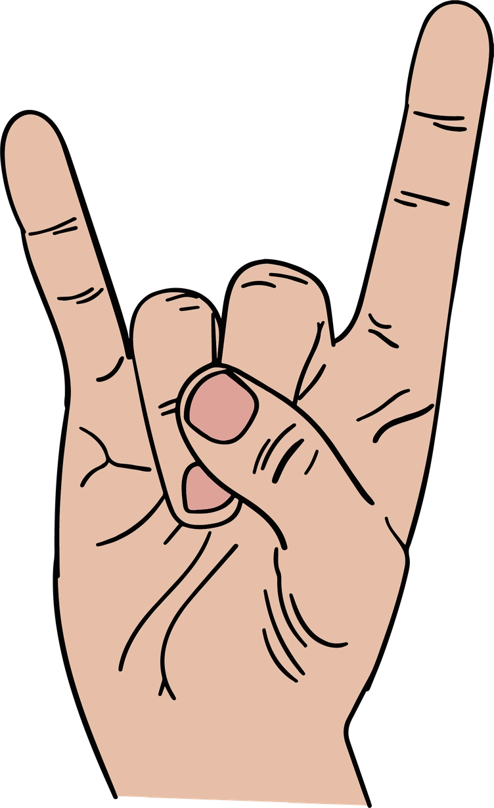

80's Hair Metal and Rock
Home
Image Gallery
Video Gallery
Image Carousel
Most Popular Bands-
Motley Crue, Guns N Roses, Def Leppard, Poison, Bon Jovi, Ratt, Kiss, Cinderella, W.A.S.P., Whitesnake, Warrent,